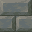
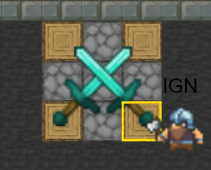
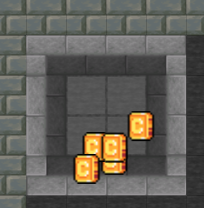
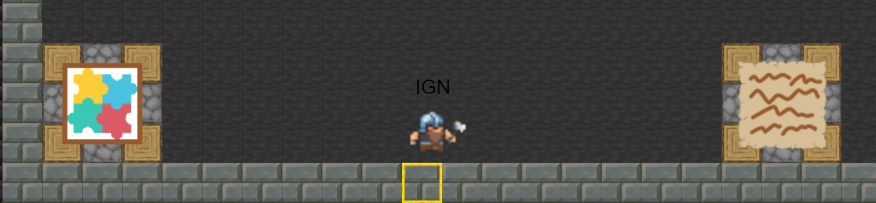

How to play
Welcome to Saboteur Escape Room!
1. Overview:
- There are two player roles in this game: Saboteurs, and Dwarves.
- Each player has been randomly assigned a role, and they do not know the roles of other players.
- In this game, there are four rooms in total - the main room, where players spawn, and three treasure rooms.
- Only one of the three treasure rooms are real.
- The objective of the Dwarves is to reach the real treasure room before time runs out.
- The objective of the Saboteurs is to prevent the Dwarves from reaching the real treasure room before time runs out.
- If time runs out before the real treasure room is found, the Saboteurs win.
- If any player finds the real treasure room, regardless if the player is a Dwarf or a Saboteur, the game automatically ends, and the Dwarves win.
- There is no maxmimum limit on the total number of players in a single room, however, there must be a minimum of four players in a single room for the game to start.
2. Gameplay:
Basic Gameplay:
- During the game, both Saboteurs and Dwarves can place the following wall blocks, stone blocks, path blocks, and boundary blocks. There will be a 30 second cooldown after placing 5 blocks (excluding boundary blocks placed). This cooldown can be reduced by purchasing a cooldown reduction from the shop.
-

Wall blocks: These blocks make up the walls of rooms, and can be broken by placing a path block on it.
-
Stone blocks: These blocks make up the area between rooms, and can be broken by placing a path block on it.
-
Path blocks: These blocks can be used to dig paths through the stone and wall blocks, as players are allowed to walk on top of these blocks. These blocks make up the floor of the main room.
-

Boundary blocks: These blocks can be placed by both Saboteurs and Dwarves, but they can never be broken. For this reason, players can only place boundary blocks after purchasing boundary blocks at the shop using coins.
The shop:
- During the game, players can purchase abilities and buffs using coins through the shop by walking up to the shop and clicking on the "Examine" button. The shop can be seen below: 
- The following abilities/buffs can be purchased:
- Reducing map cooldown to 10 seconds for 2 minutes
- Placing one boundary block
- Preventing a player from placing/removing blocks for 3 minutes by "muting" them
- Viewing which treasure room is the real treasure room
Coins:
- Players can obtain coins from coin spawners located at both corners of the main room. Coins can be used to purchase items from the shop, and coin spawning rates can be increased by solving puzzles. Each coin spawner can only contain a maximum of 6 coins at any one time to reduce lag, hence coins must first be collected from the spawners for more coins to spawn. Coins can be collected from the spawners by simply walking up to the coins. 
Puzzles:
- Two puzzles are available for players to solve in the main room, which will increase coin spawning rates. The exact increase in coin spawning rates depends on the puzzle solved, and is stated at the top of every puzzle. Once a player has solved a puzzle, they cannot solve that puzzle again, however, other players can still solve that puzzle. To solve a puzzle, walk up to that puzzle and click the "Examine" button. 